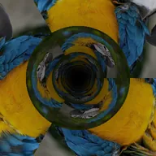

トンネル

レイヤーで無限に続くトンネルを作り、その中を進みます。位相を変えるとテクスチャが奥行き方向にずれます。
設定
| 設定項目 | 種類 | 範囲 | デフォルト |
|---|---|---|---|
| 回転X | 角度 | -3600°〜3600° | 0° |
| 回転Y | 角度 | -3600°〜3600° | 0° |
| 回転Z | 角度 | -3600°〜3600° | 0° |
| 位相 | 数値 | -1000〜1000 | 0 |
| 速度 | 数値 | -20〜20 | 1 |
| ねじれ | 数値 | -360〜360 | 0 |
| 繰り返し | 数値 | 1〜16 | 3 |
| フォグ | 数値 | 0〜1 | 0.4 |
| フォグの色 | 色 | – | #000000 |
| 位置 | ポイント（X, Y） | -5000 px〜5000 px | 0 px, 0 px |
| スケール | 数値 | 0.05〜10 | 1 |